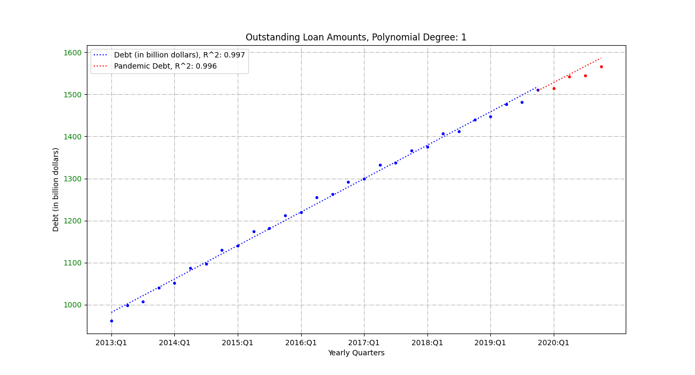
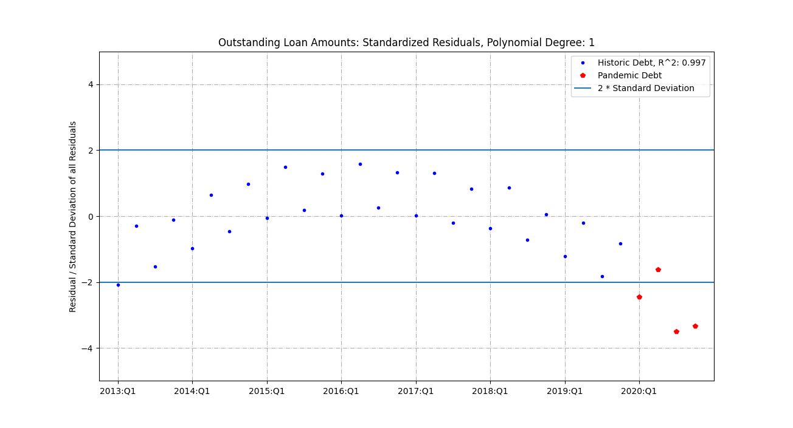
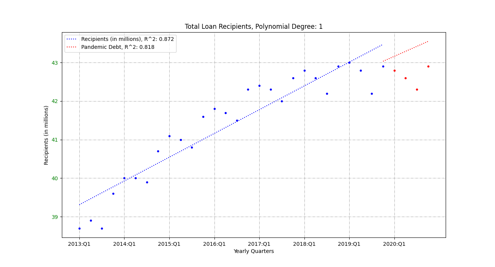
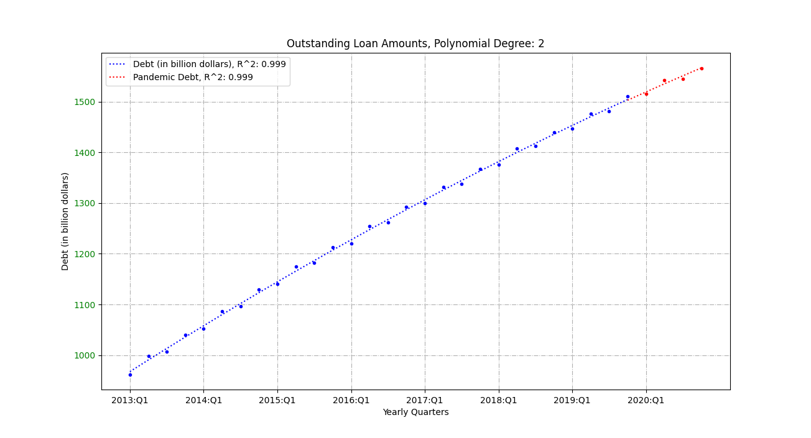
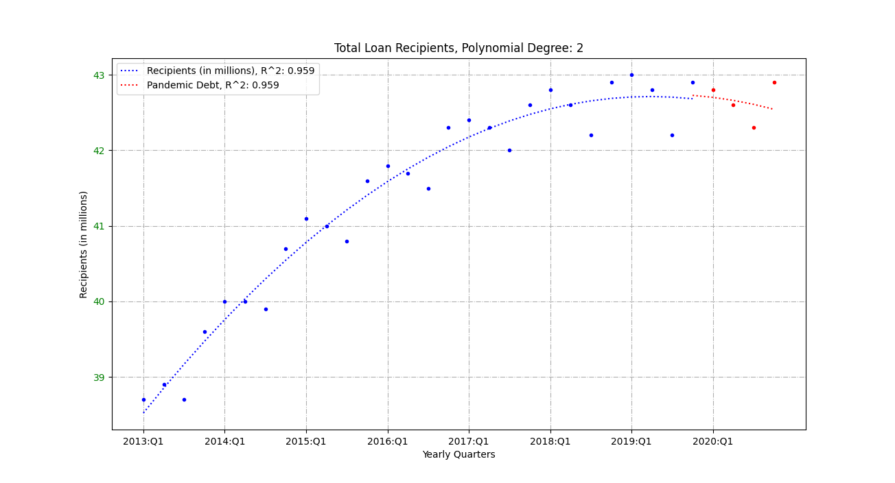

This project tackles the data analytics challenge of college financial datasets. We will cover the trends in federal debt from 2013-2020 and will create statistical graphs and data.
First, we decided to create an analysis of the total debt from 2013-2020. We had intentions to examine if the recent and ongoing pandemic caused a significant change to the total debt in America. To accomplish this we plotted our data by yearly quarter and created a linear (one degree polynomial) regression.
The blue line was created using the historic data, from 2013 Q1 to 2019 Q4; the red from 2013 Q1 to 2020 Q4. These allowed us to see a change in the slope, indicating a possible correlation of the total debt to the arrising pandemic. This was especially evident becuase we achieved quite good correlation for our regression (our R-Squared value was close to one, indicating a good fit).
We however, wanted to get more conclusive and mathematical proof for our hypothesis. With the advice of a more statistically inclined colleague we chose to complete an analysis of the Standardized Residuals. To do this, we had to first calculate the residuals (the difference between the estimated value and the observed value) then normalize it by dividing by the residual's standard deviation, producing the next graph.
From such a graph, we can draw conclusions from the distance of the points from zero. Specifically, if the standardized residual is outside the range [-2, 2] (I.E. greater than 2 standard deviations away from our regression line), we can conclude that it is a significant outlier to the assumed correct regression line. In other words, becuase the regression is based on data prior to the pandemic, we could conclude that 2020 does not follow the historic trend. In fact, the data would suggest that the total debt has not grown as we would have expected as the residuals are negative.
We also conducted the same procedure on the total amount of debtors, producing the following graphs
From these, we can come to similar conclusions with the outlying data. Again, there seems to be a a significant drop in the rate of new recipients. This could also explain the drop in total debt gained as there weren't as many new debtors as expected. The regression we we created for this graph, however, was significantly less accurate than the one for the total debt meaning conclusions made from this diagram are less compelling.
However, at this point we noticed that both the residual graphs appeared to be curved and even the recipient graph was clearly displaying a curve. We then decided to increase the degree of our regression, producing a polynomial estimation function. This fit the graph much better and produced a much straighter looker residual analysis.
These new regression curves proved to be more accurate, proven by both the R-Squared value and by the symmetric nature of the residual graph. The curves generated from the data also seemed to become a single continuous curve without the break seen in the linear regression. However, the new residual graphs no longer contains such strong outliers, disproving any possible hypothesese we could have made about the pandemic's effect on total debt.
Switching to a second degree polynomial also dramatically increased accuracy for the total recipient data. However once again the outliers are brought back inside the "insignificant zone" causing issues for our hypotheses.
Despite coming to very little conclusions about the effect of the pandemic on college debt, we can see that there is a significant change occuring. We have, however, run into the immovable wall that is lack of more data. We see that 2020 Q1 and Q2 seem to follow previous trends, but Q3 and Q4 appear drastically different from the regression model we constructed. The total debt appears to be under the estimate whereas total debtors appears over. We could possibly hypothesize that the average debt per person has dropped, but we cannot confirm nor deny this as we lack continued data from the pandemic in 2021. For conclusive proof, we would also require data from after the effects of the pandemic are over so that we can prove that it caused a significant change in student debt.
Looking back on our work, I see some ways that we could have better modeled the data. Specifically, there are quite obvious trends in each recurring yearly quarter. Given more time, we would have plotted our data by quarters and run the residual analysis on each to see if there was a significant change. This would have produced better regressions as each quarter seemed to have a predictable pattern.
We also wanted to produce some visualizations of the total debt by state. However, we could not accomplish this effectively as we were unable to acquire the state-by-state break down for more than a short period of 2019 to 2020. However you can see the graphs we could make below.